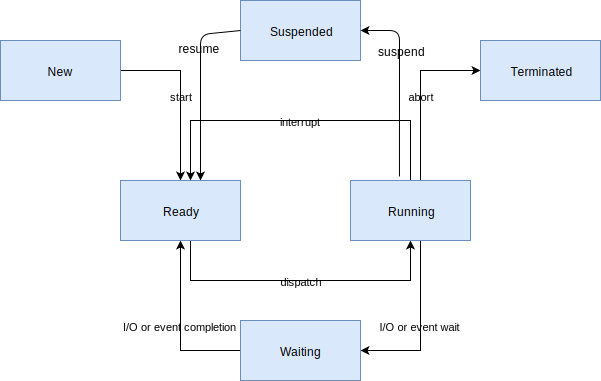
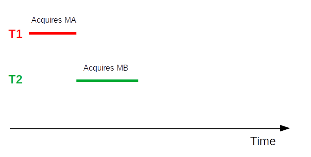
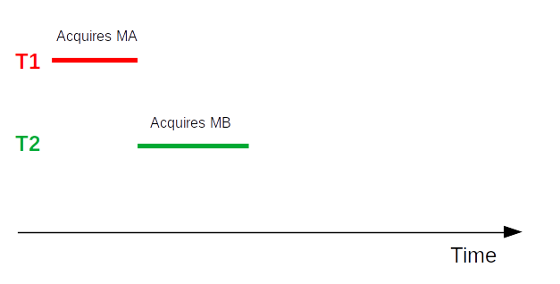

Contents - 1/2
Contents - 2/2
Execution environments
Execution environment: what the target board provides to run an application.
Bare metal
- You write all the code, without any help to run concurrent tasks, to share data between tasks, etc.
- Nowadays, an abstraction layer is provided by almost all microcontroller manufacturers:
What we did in the practical sessions is bare-metal software development.
Real-Time Operating System (RTOS)
- Provides real help to run concurrent tasks, share data between tasks, etc.
- Allows for deterministic response time
- Uses very little memory
- No protection between tasks, nor between tasks and RTOS (no virtual memory)
- No way to modify the application without rebuilding and reflashing (well, not fully true)
Minimum required memory:
- RAM: a few KB
- Flash: a few KB
- Depends on the application

- FreeRTOS acquired by Amazon - 2017
- ThreadX acquired by Microsoft - 2019, transferred to the Eclipse Foundation, as open source - 2023
- Google and Meta support Zephyr
Available services: will be seen farther.
Operating System (OS)
- Mainly: Linux
- Similar to a desktop computer environment:
- Package manager, to install new applications
- Graphical user interface is possible
Minimum required memory:
- RAM: a few MB or a few tens of MB
- Depends on applications
Usually:
- RAM: from 512 MB to 8 GB
- Flash card: from 1 GB to 8 GB
- Linux typically requires an MMU (Memory Management Unit) ⇒ virtual memory
- The kernel can be configured to work without one
- Thanks to μClinux project
- Beware about applications compatibility

Latest news: real-time is now supported by mainline Linux kernel.
⇒ "standard" Linux now can provide deterministic response time.
More about what an RTOS is
Problem
The bare metal architecture (ISR + background task) seen before does not provide solutions to the following needs:
- Structure application code in several "independent" units of execution
- Share data between these units
- Handle different priorities
- Ensure that time constraints are met (or not met)
- Etc.
A solution
An RTOS.
More precisely
RTOS = OS intended for real-time applications.
- Provides minimal latency when handling events
- Guarantees predictable response time
Soft and hard real time
- Hard real time: when a system will cease to function if a deadline is missed, which can result in catastrophic consequences
- Soft real time: when a system continues to function even if it’s unable to execute within an allotted time. If the system has missed its deadline, it will not result in critical consequences. The system can continue to function, though with undesirable lower quality of output
This presentation is about soft real time only.
Benefits
- Provides a way to split application code in several execution blocks
- Allows to prioritize execution blocks
- Application architecture easier to design: several execution blocks can concurrently process events
- Can reuse existing middleware (TCP/IP stack, flash file system, time handling, etc.) more easily
- Provides a common reference framework for teams of several developers
- Makes application code more portable (to different hardware targets)
- ...
Drawbacks
- Requires more flash memory (from a few KB to a few tens of KB)
- Requires more RAM (fixed quantity + quantity depending on execution blocks)
- Consumes some processing power (a few %)
- Associated learning curve must be taken into account
- Brings in a software dependency
Components
Usual components:
- Scheduler - assigns computing resource to the execution blocks (tasks or threads)
- Services allowing concurrent accesses to shared resources
- Communication services letting tasks exchange data
- Time services
- Memory allocation services
- Middleware: Wi-Fi stack, Bluetooth stack, TCP/IP stack, USB stack, flash file system, GUI, etc.
GUI: Graphical User Interface
Tasks
Task: a long-living execution block.
- The application is made of several tasks.
- These tasks may have to exchange data and to synchronize.
- Each task has its own execution context
- Each task can be assigned a priority
- Each task is assigned a "fair" proportion of processing time by the scheduler
A task may be in one of several states. Usually:
- Ready: the task is ready to run, but another one is using the processor
- Running: the task is being executed
- Blocked (or Waiting): the task is waiting for an event (timer timeout, reception of a byte on a serial link, etc.)
- Suspended: the task won't use the processor anymore
For FreeRTOS:

Note: for our practice sessions, we will use FreeRTOS
For Zephyr OS:
On a microcontroller with one core: only one task can be executed at a given time.
⇒ Difference between concurrency and parallelism:
- Concurrency: several tasks appear to be running at the same time
- Parallelism: several tasks are really running at the same time
The scheduler is the magic behind concurrency.
Scheduling method depends on the RTOS.
For FreeRTOS:
- Fixed priority - task priority is not changed (excepted for priority inheritance - see farther)
- Preemptive - if a higher priority task enters ready state (due to some event), and a lower priority task is being executed, the scheduler stops it and starts the higher priority one
- Round-robin time slicing - every task in the set of tasks with same priority is guaranteed to be executed after some time
When a task requests to wait for some event:
- The task enters the blocked (waiting) state
- The scheduler schedules the task with the highest priority, having waited for the longest time period
When a task with a given priority loops, for instance polling for an event without waiting for it:
- Tasks with lower priority will never be executed.
API example
task_handle_t task_create(...)status_t task_delete(task_handle_t th)status_t task_priority_set(task_handle_t th)status_t task_suspend(task_handle_t th)status_t task_resume(task_handle_t th)...
A good overview of task scheduling is provided by the FreeRTOS website.
Exercise 11
Creating and starting one task
- Purpose: make a LED blink using a task
- What to do: follow the instructions provided by the
RTOS-presentation/exercises/11-Start-task/README.mdfile
Concurrency control
Exercise 12
Sharing data bug
- Purpose: exhibit a possible problem when sharing data between tasks
- What to do: follow the instructions provided by the
RTOS-presentation/exercises/12-Shared-structure-bug/README.mdfile
In real life (of an embedded developer), concurrency problems are far less evident than here 🙂
They may occur on shared data, and on shared physical interfaces
In next slides, we see how to handle this class of problems.
Aim of concurrency control
Generate correct results for concurrent operations on same resource.
Shared resources
- Hardware: interfaces, peripherals
- Data structures used to transfer information between tasks, and between ISRs and tasks
Critical section
- Part of a program that must be protected from being executed by concurrent tasks
- In other words: it must provide atomic access to a shared resource
Simplest implementation
- For a system with only one processor: disabling/enabling interrupt(s)
But better to use the RTOS services described in next pages, in any case.
Mutex (MUTual EXclusion)
An object which:
- Guards a resource
- Can be imagined as containing a token
- A task which wants to access a given resource requests the token from the mutex:
- If it is available: OK
- If it is not available: the task stays blocked on the mutex until the token is available or a timeout occurs
- A task which has obtained the token must release it once it stops accessing the resource
This is a cooperation agreement. Creating a mutex does not protect a resource from a task that would not use the mutex!
API example
mutex_handle_t mutex_create()status_t mutex_acquire(mutex_handle_t mh, timeout_t timeout)status_t mutex_release(mutex_handle_t mh)status_t mutex_delete(mutex_handle_t mh)
An ISR must not try to take a mutex. Because it must not wait!
Exercise 13
Shared structure and mutex
- Purpose: demonstrate how to use a mutex
- What to do: follow the instructions provided by the
RTOS-presentation/exercises/13-Shared-structure-mutex/README.mdfile
Potential problem
Context:
- A task T3, of high priority, shares a resource with T1, a task of low priority
- The resource is protected by a mutex, M
- A task T2, of medium priority, performs some continuous processing, and almost never waits for an event
Successive actions


- The highest priority task, T3, is executing. Then it waits for an event.
- The medium priority task, T2, can now execute. Then it waits for an event.
- The low priority task, T1, can now execute. Then it requests to acquire M, acquires it, and goes on executing.
- Event for T2 is received. The scheduler schedules T2.
- Event for T3 is received. The scheduler schedules T3. Then T3 requests to acquire M.
- But M is held by T1. So T3 enters blocked state. And only T2 can be scheduled.
- As T2 almost never waits for an event, T1 will not be able to run again, and won't be able to release M: T3 stays blocked. T2, of lower priority than T3, blocks T3.
Result
- T2, of lower priority than T3, runs, instead of T3, as if it was of higher priority
- This is the problem of priority inversion
A (partial) solution
- If a high priority task blocks while attempting to acquire a mutex that is currently held by a lower priority task, then the priority of the task holding the mutex is temporarily raised to that of the blocking task
- This is priority inheritance
- Does not entirely solve the problem. The real solution is a good system design
Note: the timeout of the take function may also help.
A real-life example of priority inversion
- In 1997, Pathfinder landed on Mars
- After some time, the spacecraft began experiencing system resets and loosing sensor data
- A remote (!) debug session found the source of the problem: priority inversion
Note: time transmission between Earth and Mars is between 4 min and 24 min.
Another potential problem
Context:
- Task T1 would like to acquire a first mutex, MA and then a second one, MB
- Task T2 would like to acquire MB and then MA
Successive actions
 



- T1 requests to acquire MA, and acquires it.
- T2 requests to acquire MB, and acquires it.
- T1 requests to acquire MB and stays blocked on it.
- T2 requests to acquire MA and stays blocked on it.
- Deadlock!
Solution
A good system design.
Note 1: the timeout of the take function may also help.
Note 2: we will see a possible solution easier to use in a next section.
Semaphore
- Guards a set of resources
- Contains a variable counting the number of free resources
- A task which wants to access one of the resources calls the semaphore take function. This decrements the variable
- At the end of the access, give must be called. This increments the variable
API example
sem_handle_t sem_create(int max_count, int initial_count)status_t sem_take(sem_handle_t sh, timeout_t timeout)status_t sem_give(sem_handle_t sh)status_t sem_delete(sem_handle_t sh)
An ISR must not try to take a semaphore. Because it must not wait!
Exercise 14
Using a semaphore
- Purpose: demonstrate how to use a semaphore
- What to do: follow the instructions provided by the
RTOS-presentation/exercises/14-Semaphore/README.mdfile
Mutex vs semaphore
- A mutex provides priority inheritance, a semaphore does not
- A mutex can be used recursively by a task
- A mutex must be released by the task which acquired it
- A mutex is used to guard a resource
- A semaphore is used to manage a set of resources or to count events
Communication
By communication we mean:
- Exchanging data between tasks
- Exchanging data between ISRs and tasks
Exchanging data is usually asynchronous: data producer may produce data at some time, while data consumer may try to consume data at another time.
Data exchange must be protected so that the consumer always gets consistent data.
It is desirable that a mechanism let the consumer know that there is some data to consume.
Queues
- Used to send messages between a source and a destination

Usually:
- A queue is FIFO (Firt In First Out)
- The write operation returns immediately
- Trying to read from an empty queue blocks
- Trying to write into a full queue blocks or returns an error
- Messages are of fixed size (but may contain pointers)
- Messages are passed by copy
API example
queue_handle_t queue_create(int queue_length, int message_size)status_t queue_send(queue_handle_t qh, void *message, timeout_t timeout)status_t queue_receive(queue_handle_t qh, void *message, timeout_t timeout)status_t queue_delete(queue_handle_t qh)
Exercise 15
Using a queue
- Purpose: demonstrate how to use a queue
- What to do: follow the instructions provided by the
RTOS-presentation/exercises/15-Queue/README.mdfile
Queues: benefits - 1/2
- Ensure atomic access to messages
- Provide synchronization between tasks
Queues: benefits - 2/2
A useful tool to prevent priority inversion and deadlocks
⇒ In many cases, it's better to use queues instead of mutexes or semaphores.
A common design pattern: to provide access to a shared resource, use a "server" task with a queue. Clients write their requests into the queue.
Exercise 16
Time-stamped button presses
- Purpose: use a queue to handle button presses
- What to do: follow the instructions provided by the
RTOS-presentation/exercises/16-Button-presses/README.mdfile
Exercise 17
A log server
- Purpose: correct the log messages problem detected in exercise 14
- What to do: follow the instructions provided by the
RTOS-presentation/exercises/17-Log-server/README.mdfile
Note: this exercise is a little bit more challenging than the previous ones.
Concurrency summary
Problems start when you have to share objects between concurrent tasks.
Solutions are based on atomic operations. An atomic operation is an operation which can't be interrupted by another one.
In a bare-metal environment:
- With a single-core microcontroller: atomicity can be provided by disabling interrupt(s)
- With a multi-core microcontroller: atomicity rely on specific instructions and bus control
In an RTOS environment, high-level facilities:
- Mutexes
- Semaphores
- Queues
- Etc.
Mutexes and semaphores must be used with caution, otherwise: priority inversion, deadlock.
Queues can be an easier solution. They can be used to synchronize tasks, and to exchange data between tasks.
In some contexts, mutexes and semaphores can be better than queues. You have to remember that they exist.
In the end, many things depend on the architecture, i.e. on the developer(s).
Time
Timer
We used one in exercise 9.
- Software timers: service provided by the RTOS, based on at least one hardware timer
- No limitation (excepted RAM) on the number of timers
- When the timer reaches its duration, it calls its callback function
- The callback function is passed a parameter that allows to identify the timer
- Do not block in the callback function!
Time functions
- Time is local to the microcontroller
- Function to get current (local) time
- Function to convert time (e.g. POSIX format)
In some systems integrating several devices and/or PCs, servers, etc., it may be important to have a common time.
If the devices are connected to the Internet, NTP (Network Time Protocol) can be used.
If not, you're on your own.
Possible solutions:
- A Real-Time Clock (RTC)
- A simple message exchange to get (approximate) time
- Etc.
Memory allocation
Dynamic memory allocation
- An application may require an amount of memory not known beforehand
- An application may require to allocate some memory to some task, and reallocate it to some other task later on
- Some data structures and associated operations may require dynamic memory (linked lists...)
⇒ C library provides malloc and free functions
Dynamic memory allocation
- Memory is allocated when the application requests it
- The application must release memory when no more used: no garbage collector
- The memory is allocated from the heap
Drawbacks of dynamic memory allocation
- Several interwoven allocation/release cycles of memory blocks of different sizes may lead to heap fragmentation
- Allocation and release times are not deterministic (but not as bad as garbage collecting for higher-level languages)
⇒ If possible, do not use dynamic memory allocation
For FreeRTOS, a page to read.
Middleware
Quite often, developing an application requires more than an RTOS:
- Storing data in flash memory
- Handling integrated radio interfaces (Wi-Fi, Bluetooth...)
- Using one of the IP protocols (TCP, UDP...) over some networking layer
- Using some messaging protocols (MQTT, CoAP...)
- Logging
- Updating the code in the field (FUOTA - Firmware Update Over The Air)
- Artifical Intelligence tooling
- etc.
The availability of such middleware components depends on the RTOS.
Some components may be generic (RTOS independent) but may require some integration.
⇒ Check the ecosystem against your needs before choosing an RTOS
Thank you for your attention.